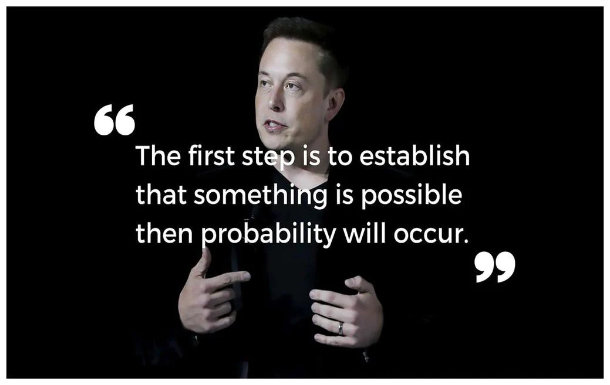

1st May, 2022
Life Quotes
1. "Live as if you were to die tomorrow. Learn as if you were to live forever." —
Mahatma
Gandhi
2. "In the end, it's not the years in your life that count. It's the life in your
years."
— Abraham Lincoln
3. "Many of life's failures are people who did not realize how close they were to
success
when they gave up." — Thomas A. Edison
4. "Health is the greatest gift, contentment the greatest wealth, faithfulness the best
relationship." — Buddha
5. "Life is never fair, and perhaps it is a good thing for most of us that it is not."
— Oscar Wilde
6. "In this life we cannot do great things. We can only do small things with great
love."
— Mother Teresa
7. "Your work is going to fill a large part of your life, and the only way to be truly
satisfied is to do what you believe is great work. And the only way to do great work is to love what
you do. If you haven't found it yet, keep looking. Don't settle. As with all matters of the heart,
you'll know when you find it." — Steve Jobs
8. "You have brains in your head. You have feet in your shoes. You can steer yourself
any
direction you choose." — Dr. Seuss
9. "I don't believe in happy endings, but I do believe in happy travels, because
ultimately, you die at a very young age, or you live long enough to watch your friends die. It's a
mean thing, life." — George Clooney
10. "Throughout life people will make you mad, disrespect you and treat you bad. Let God
deal with the things they do, cause hate in your heart will consume you too." — Will Smith
11. "Only a life lived for others is a life worthwhile." -Albert Einstein
12. "Life is ours to be spent, not to be saved." — D. H. Lawrence
13. "You must not lose faith in humanity. Humanity is an ocean; if a few drops of the
ocean
are dirty, the ocean does not become dirty." — Mahatma Gandhi
14. "Keep smiling, because life is a beautiful thing and there's so much to smile
about."
— Marilyn Monroe
15. "Our greatest weakness lies in giving up. The most certain way to succeed is always
to try just one more time." — Thomas A. Edison
1st May, 2022
Quotes By Famous Peoples
1. "Whatever you are, be a good one." ― Abraham Lincoln
2. "Don't judge each day by the harvest you reap but by the seeds that you plant."
— Robert
Louis Stevenson
3. "I alone cannot change the world, but I can cast a stone across the water to create
many
ripples." — Mother Teresa
4."In the middle of every difficulty lies opportunity." — Albert Einstein
5. "Life is what happens when you're busy making other plans." — John Lennon
6. "How wonderful it is that nobody need wait a single moment before starting to improve
the world." — Anne Frank
7. "If something is important enough, even if the odds are stacked against you, you
should
still do it." — Elon Musk
8. "You can't cross the sea merely by standing and staring at the water." — Rabindranath
Tagore
9. "Things may come to those who wait, but only the things left by those who hustle."
― Abraham Lincoln
10. "In a gentle way, you can shake the world." — Mahatma Gandhi
11. "Opportunity is missed by most people because it is dressed in overalls and looks
like
work." — Thomas Edison
12. "The best way to appreciate your job is to imagine yourself without one." — Oscar
Wilde
13. "Opportunity is missed by most people because it is dressed in overalls and looks
like
work." — Thomas Edison
14. "Spread love everywhere you go. Let no one ever come to you without leaving
happier."
— Mother Teresa
15. "Whether you think you can or you think you can't, you're right." — Henry Ford

1st May, 2022
Business Motivational Quotes
1. "Focus on being productive instead of busy." — Tim Ferriss
2. "The big lesson in life is never be scared of anyone or anything." — Frank Sinatra
3. "Your time is limited, so don't waste it living someone else's life. Don't be trapped
by
dogma - which is living with the results of other people's thinking." — Steve Jobs
4. "Conformity is the jailer of freedom and the enemy of growth." — John F. Kennedy,
35th president of the United States of America
5. "The only way you are going to have success is to have lots of failures first." —
Sergey Brin, co-founder, Google
6. "Always deliver more than expected." — Larry Page, co-founder of Google
7. "If you don't build your dream, someone else will hire you to help them build
theirs." — Dhirubhai Ambani, founder, Reliance Industries
8. "If your actions inspire others to dream more, learn more, do more and become more,
you are a leader." — John Quincy Adams, 6th President of the United States
9. "If you can't feed a team with two pizzas, it's too large." — Jeff Bezos, Founder and
CEO of Amazon
10. "If you are not embarrassed by the first version of your product, you've launched
too late." — Reid Hoffman, co-founder of LinkedIn
11. "A business has to be involving, it has to be fun, and it has to exercise your
creative instincts." — Richard Branson
12. "To be successful, you have to have your heart in your business, and your business
in your heart.” — Thomas Watson
13. "Most of our competitors were one-product wonders … They would do their one product,
but never get their engineering sorted out." — Bill Gates
14. "Your work is going to fill a large part of your life, and the only way to be truly
satisfied is to do what you believe is great work. And the only way to do great work is to love what
you do." — Steve Jobs, co-founder, Chairman and CEO of Apple Inc.
15. "Your most unhappy customers are your greatest source of learning." — Bill Gates,
co-founder of Microsoft
1st May, 2022
Motivational Quotes
1. "You can get everything in life you want if you will just help enough other people
get what they want." — Zig Ziglar
2. "Courage is like a muscle. We strengthen it by use." — Ruth Gordo
3. "Develop success from failures. Discouragement and failure are two of the surest
stepping stones to success." — Dale Carnegie
4. "Don't count the days, make the days count." — Muhammad Ali
5. "I learned a long time ago that there is something worse than missing the goal, and
that's not pulling the trigger." — Mia Hamm
6. "Things work out best for those who make the best of how things work out." — John Wooden
7. "Take up one idea. Make that one idea your life--think of it, dream of it, live on that idea. Let the brain, muscles, nerves, every part of your body, be full of that idea, and just leave every other idea alone. This is the way to success." — Swami Vivekananda
8. "Successful entrepreneurs are givers and not takers of positive energy." — Anonymous
9. "What seems to us as bitter trials are often blessings in disguise." — Oscar Wilde
10. "If you can't explain it simply, you don't understand it well enough." — Albert Einstein
11. "You can't use up creativity. The more you use, the more you have."
— Maya Angelou
12. "Some people want it to happen, some people wish it would happen, others make it happen."
— Michael Jordan
13. "Never let go of that fiery sadness called desire."
— Patti Smith
14. "Whether you think you can or you think you can't, you're right." — Henry Ford
15. "Strive not to be a success, but rather to be of value." — Albert Einstein